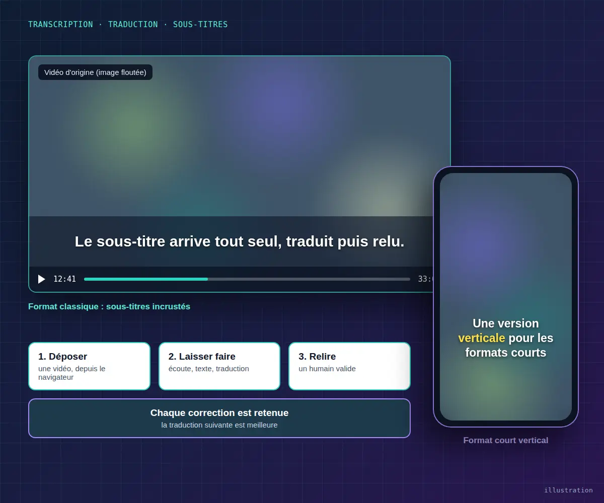

Projet phare · En production 018 h 46de vidéo traitée
227pages traduites
4 437corrections retenues
0installation
Transcription et sous-titrage automatiques de vidéos
- Le besoin Une petite organisation publiait des heures de cours filmés dans une langue étrangère, et des centaines de pages à traduire. Tout se faisait à la main : écouter, taper, traduire, caler chaque sous-titre.
- Ce que j'ai fait Un espace en ligne où l'on dépose une vidéo. L'outil écoute, écrit ce qui est dit, le traduit, puis incruste les sous-titres dans l'image, avec une version verticale pour les réseaux sociaux. Un relecteur corrige, et l'outil retient chaque correction pour faire mieux la fois suivante. Les documents PDF suivent le même chemin.
- Le résultat Des journées de travail économisées, et un outil qu'une équipe non technicienne utilise seule, sans rien installer.